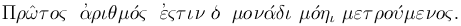

FAQ: Why are Prime Numbers called Primes?
By Chris Caldwell
Question: Why are prime numbers called prime?
Well over two-thousand years ago Euclid defined prime numbers in his definitive Geometry textbook The Elements (book 7, definition 11), as follows:

Using our alphabet this is:
Prôtos arithmos estin ho monadi monêi metroumenos.
The Elements was the standard text for geometry in the West until the twentieth century; so it was the book that fixed our choice of terminology. Roughly transliterated, Euclid's definition is:
Prime numbers are that unit alone measured.
Or translated:
A prime number is that which is measured by an unit alone.
Rather than say 'measured,' we now say 'divisible,' but the idea is simple. Prime numbers are not multiples of other numbers (the unit one was not view as a number). Aristotle used the same definition (Anal. post. II 13, 96 a 36) and along with Theon of Smyrna also viewed the unit as not being a number (Metaph. 1088 a 6), but rather the beginning of number.
So why the word 'prôtos,' and why should it be 'prime' in English?
The Greek philosophers used the word 'prôtos' is the sense of first in order of existence (see Henry George Liddell, Robert Scott, A Greek-English Lexicon, proteros and prôtos: B.I.3.c). This is one of the standard meanings of our 'prime' or 'primary.' In fact the English word 'prime' is from the Latin word for first: 'primus.' In a multiplicative sense prime numbers are thus the first numbers, the numbers from which the other numbers all arise (through multiplication). All other numbers (positive integers) are measured by primes, but primes alone are measured only by units. This makes primes first.
This mathematical meaning of 'prime' ('prôtos') is essentially unchanged from the ancient times and was apparently in use at the time of Pythagoras.
When did 'prôtos' become 'prime'? 1570. Sir Henry Billingsley first translated Euclid's Elements to English in 1570; forever establishing 'prime' are the correct English term for prime numbers. Sir Thomas Heath [Heath56] calls Billingsley's text the first and most important translation into English.
There was, of course, a time the use of 'prôtos' for prime numbers was not universal. For example Iamblichus writes that some called prime numbers 'euthymetric' and that Thymaridas called them 'rectilinear' (since they can only be represented one-dimensionally). Theon of Smyrna gives 'linear' as the alternate name. More recent authors used 'simple' and 'incomposite.' On the other hand Archim (Aren 3.2) used 'prôtos' to represent the first positive integers: literally 1 to 100,000,000. Eventually though Euclid Elements established the standard for kings and commoners alike.
In summary: we use the English word prime because the ancient Greeks saw them as multiplicatively first, so Billingsley translated Euclid's 'prôtos' as 'prime'.